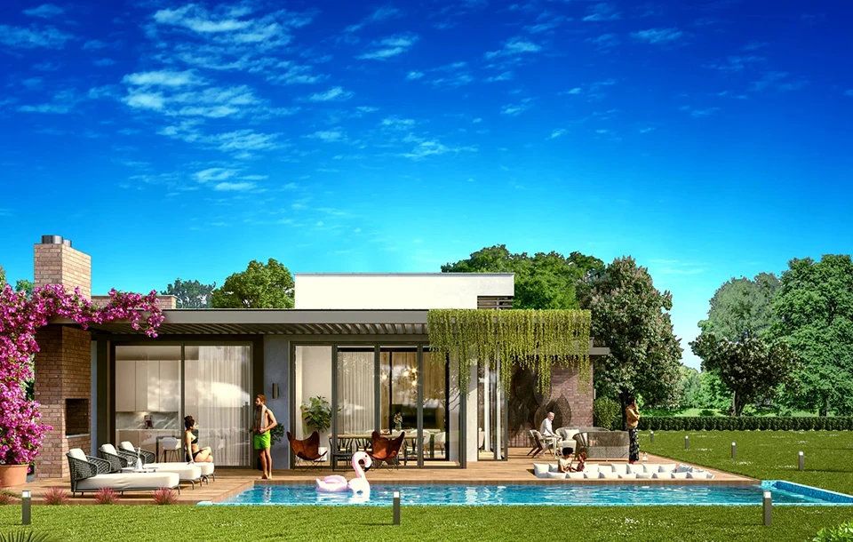

PROJECT OVERVIEW
Feza Park Villaları
A boutique villa development in Büyükçekmece with twenty-two homes on a 30,000 m² site. The published design combines private gardens, pools and generous terraces.
Villas22
Site area30,000 m²
Villa designs3
Photo gallery

Official architectural illustrations; these images do not show the current construction condition.
EVERYDAY LIVING
Living spaces
The project presentation includes private pools, terraces, two-car enclosed garages and a shared fitness club and café.
LOCATION AND ACCESS
Büyükçekmece · Istanbul
Büyükçekmece, on Istanbul’s European side. The project is presented as a low-density villa setting with extensive outdoor space.
YOUR NEXT STEP
Choose your home
Request the current apartment selection, price and payment options. Compare the exact unit, view and included services before arranging your purchase.